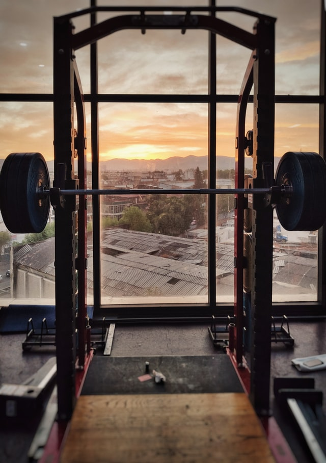

Weight Lifting
What is weightlifting?
Weightlifting is the practice of lifting weights regularly with the goal of muscular or strength growth.

Where to Start
The best way to start with lifting weight is to go to a gym and try a couple of the different lifts you like.
Over time, after you've become used to different movement patterns, you should start using a program. With a program the days you lift, times you lift and exercises that you complete weekly should stay pretty much the same.

Here are a few of the different weightlifting sports:
Each type focuses on a different goal.
Power Lifting focuses exclusively on increasing strength in the three core lifts: Flat barbell bench, high bar back squat, and deadlift.
Body Building focuses on increasing the size of the muscles on the body to create the most asthetically pleasing body, in competition a big emphasis in placed on posing.
Olympic Weightlifting is similar to powerlifting, the goal is to increase the total amount of weight lifted. However, olympic weightlifters compete in different lifts than powerlifters. They focus on the snatch, and the clean and jerk.
Strongman focuses on lifting heavy objects. While strongmen will use weightlifting to train, competition uses strange events. Like, the atlas stones, where competitors carry huge rocks from one place to another.
To get more out of weight training, it is best to do more than just add a workout schedule.
Sleep
For one thing, put a greater emphasis on sleep. Whether that is getting more sleep, or getting higher quality sleep. Sleep is necessary for muscle recovery, muscle growth, and strength increases. Sleep is the body's most anabolic state.
Diet
Diet is important for a few different reasons.
Proper nutrition improves in workout performance, and without the proper macro- and micro-nutrient proportions, the body cannot recover, rebuild, and build muscle.
Hydration
Maintaining optimal hydration throughout the day has many benefits for weightlifters:
- Hydration reduces cortisol release in the bloodstream, excessive levels of cortisol can cause muscle loss
- Because 70% of muscle is made up of water, depleted water levels can muscle loss and prevent muscle growth
- During a workout, hydration is necessary to lift longer and harder